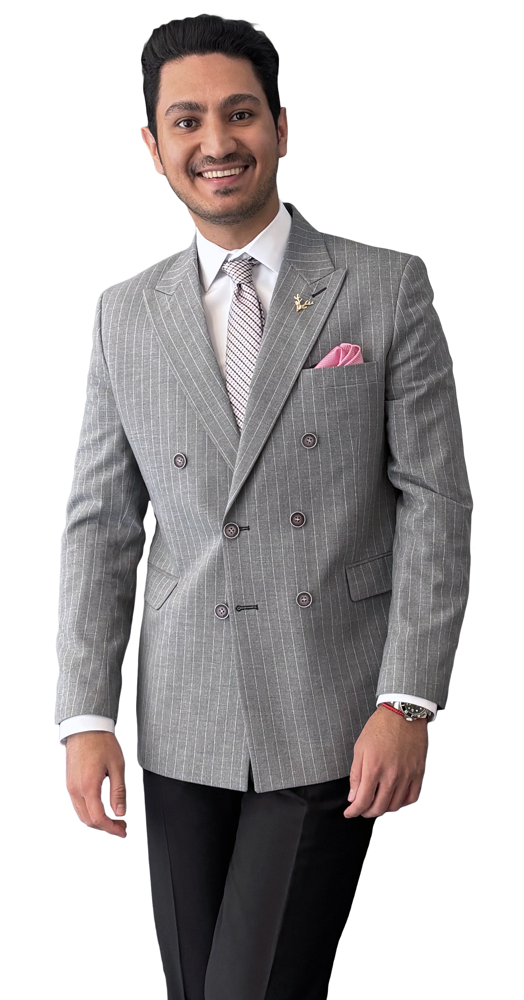
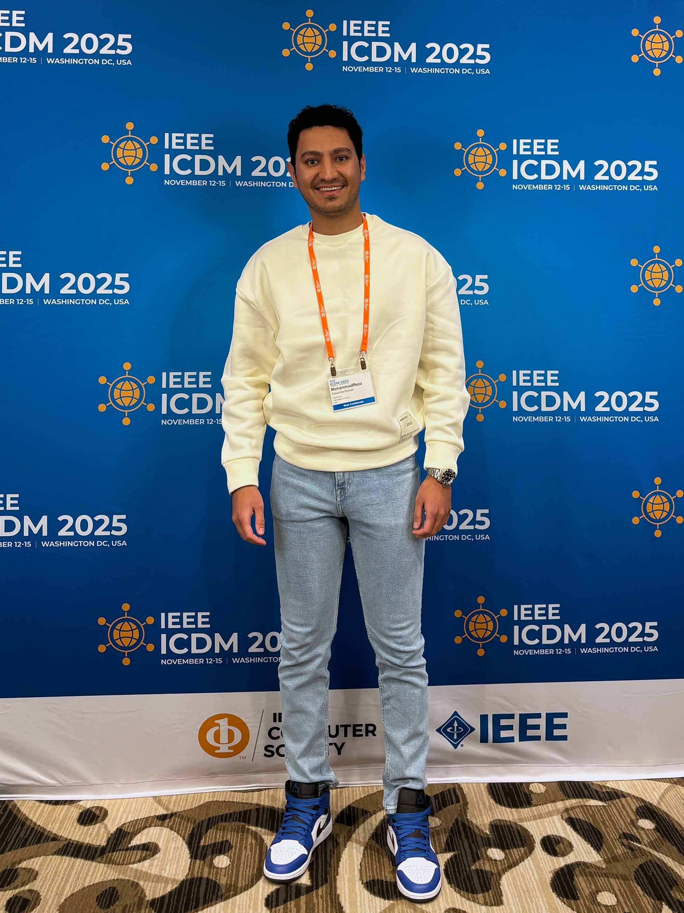
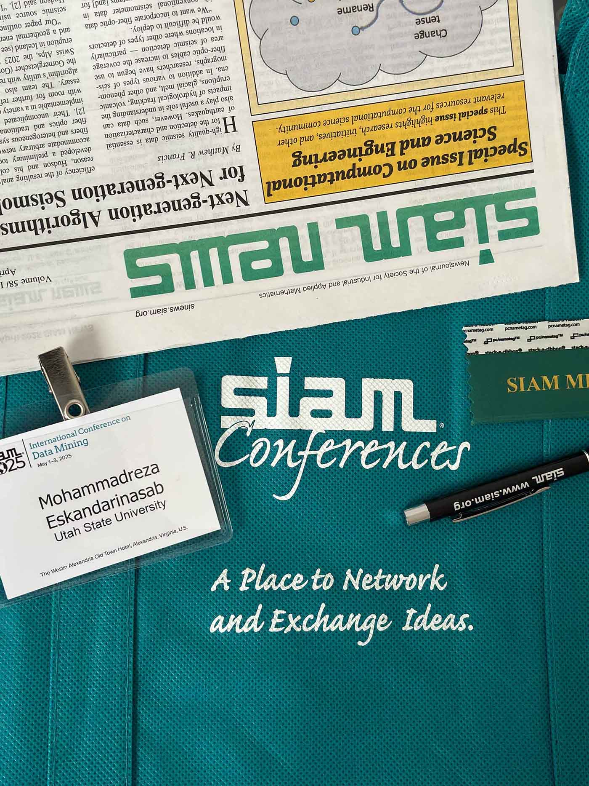
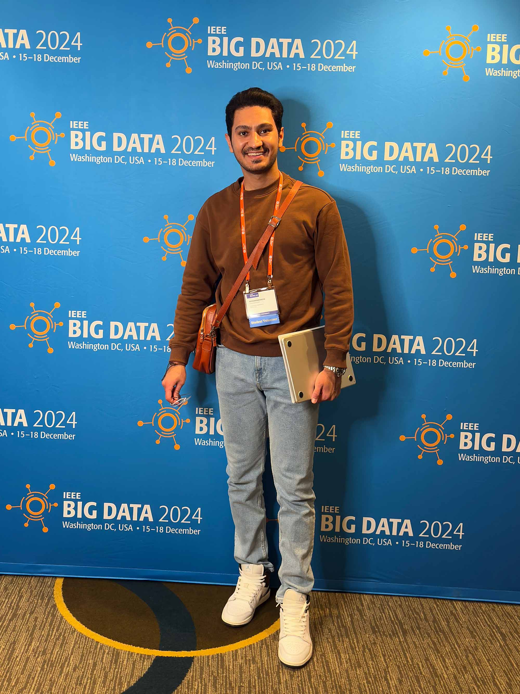
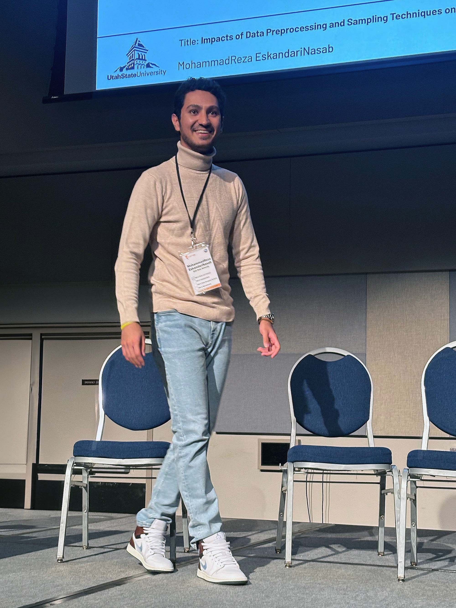
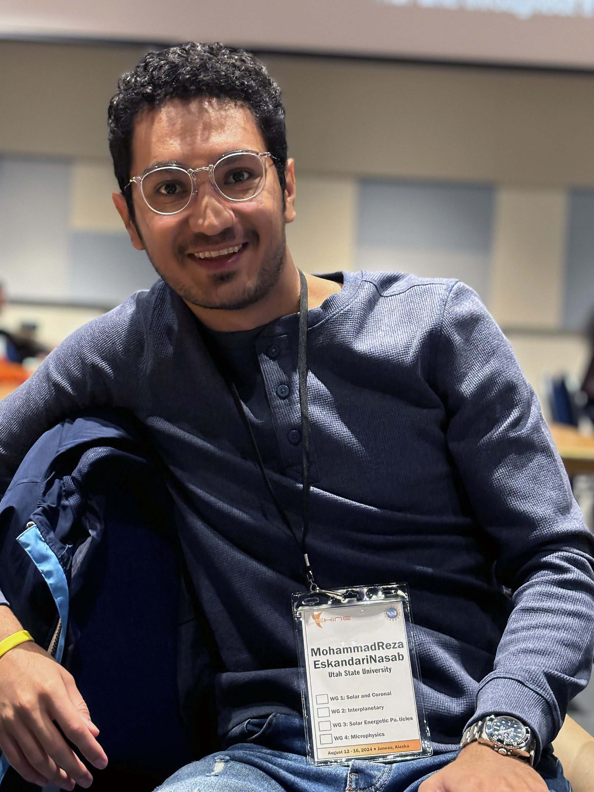
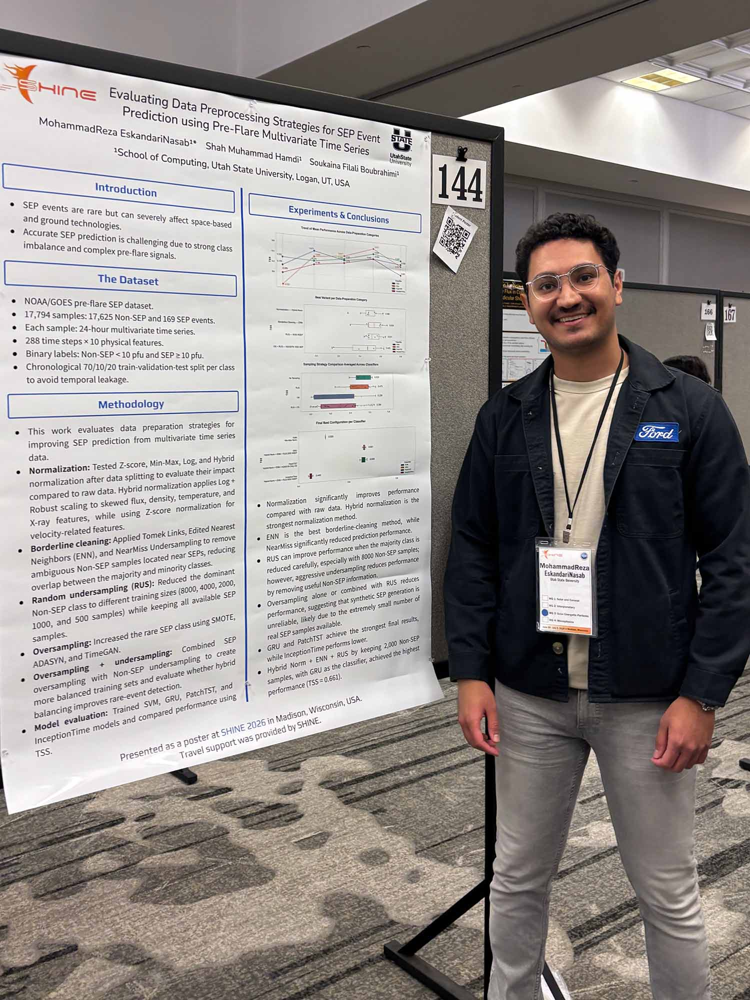
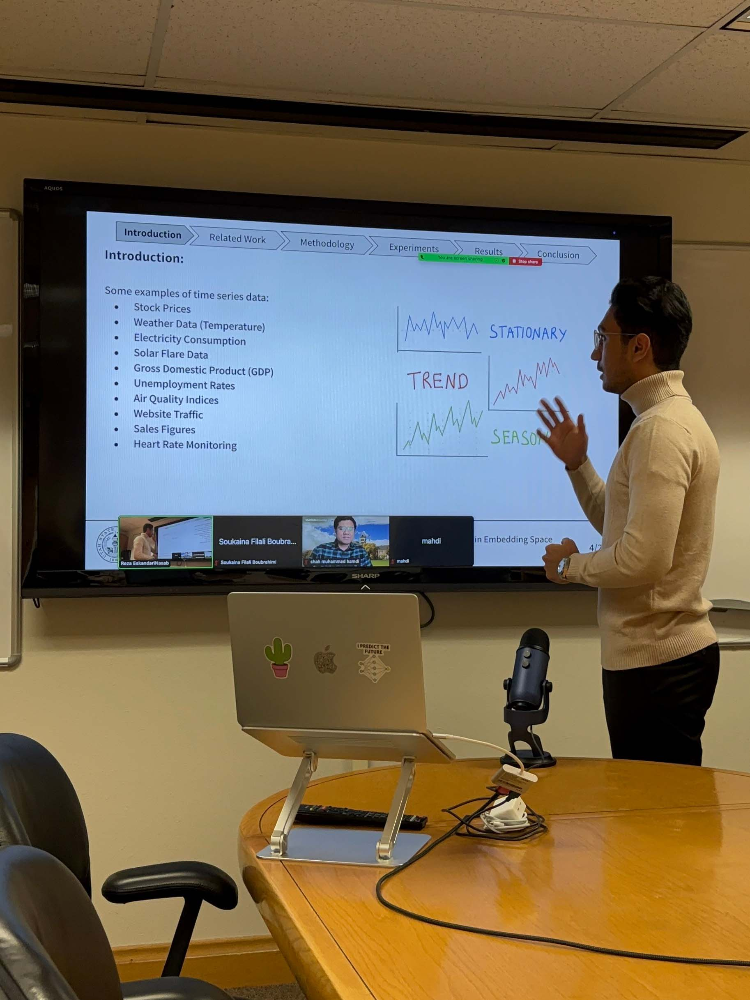
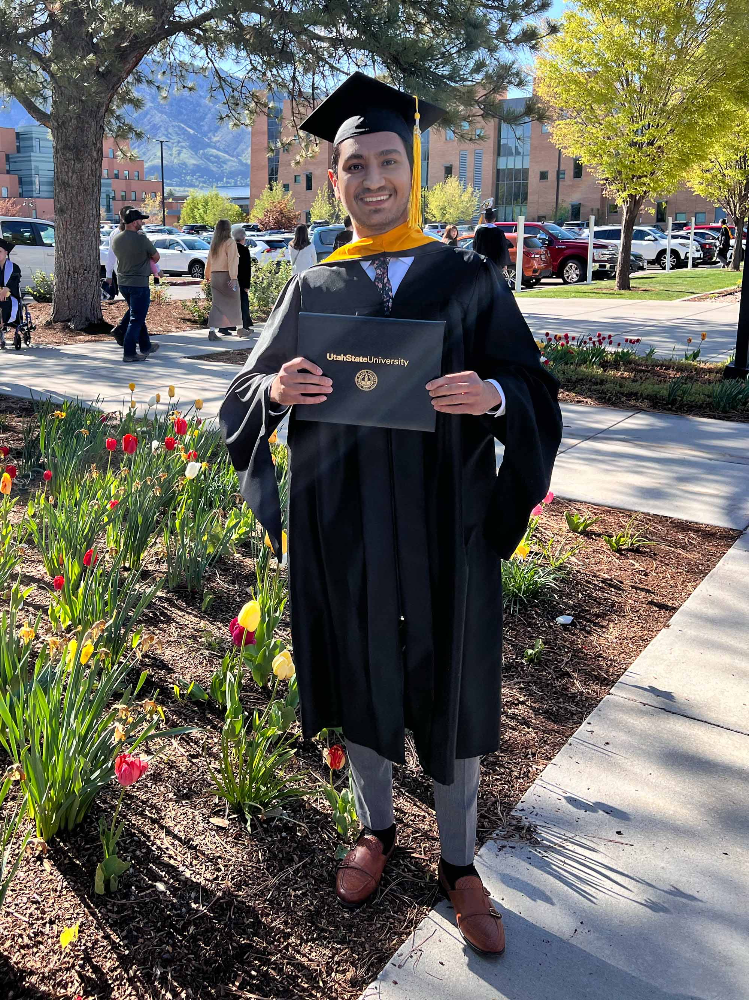
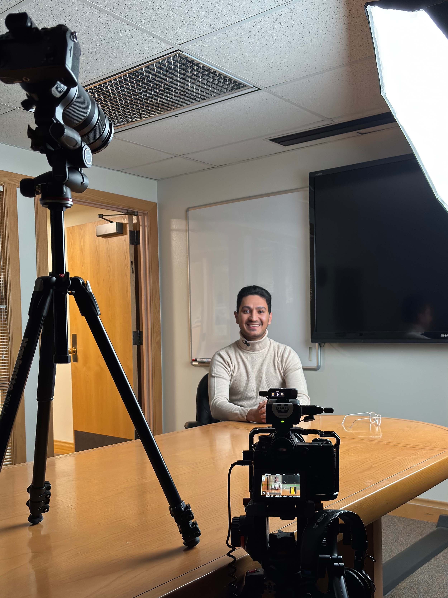

Pure machine learning
- Generative Models (Time-Series Generation)
- Multimodal Learning
- Time Series Analysis (Ensemble Models, Contrastive Learning)
I am MohammadReza EskandariNasab, also known as Sam, a name inspired by the legendary Persian hero featured in the Shahnameh. I am a fourth-year PhD candidate in Computer Science at Utah State University, where I also earned my MSc in Computer Science. I currently serve as a Graduate Research Assistant and am actively seeking Assistant Professor positions.

I am MohammadReza EskandariNasab (Sam), a PhD candidate in Computer Science at Utah State University in Logan, Utah. My research centers on generative modeling for time-series data, including diffusion models, generative adversarial networks, and adversarial autoencoders, with publications at IEEE ICDM, SIAM SDM, IEEE BigData, and IEEE ICMLA. My current work extends this research into multimodal learning through an NSF-funded project (Award No. 2530946), generating and translating across images, text, vector data, and time series through the proposed UNISON framework.
Alongside this, I build machine-learning pipelines that forecast solar flares, solar energetic particle events, and coronal mass ejections. This work has been published in The Astrophysical Journal Supplement Series and presented at IEEE ICDM 2025, with three additional manuscripts currently in submission. I have also led the development of FlaPLeT.org, an NSF-funded (Award No. 2305781) no-code platform for training and evaluating space-weather machine learning models, published in SoftwareX.
My work focuses on developing robust AI methods for scientific discovery, with particular emphasis on generative models, multimodal data fusion, and predictive modeling for complex spatiotemporal systems, as I pursue a tenure-track Assistant Professor position in computer science.
Utah State University
Utah State University
Utah State University
Utah State University · GPA 4.0/4.0
Dissertation: Proposal on denoising diffusion probabilistic models and multimodal learning.
Supervisor: Dr. Shah Muhammad Hamdi.
Utah State University · GPA 4.0/4.0
Thesis: Supervised Generative Adversarial Networks for Time Series Generation in Embedding Space.
Supervisor: Dr. Shah Muhammad Hamdi.
University of Zanjan · GPA 3.88/4.00 (last two years)
Project: Car Dealership Web Application using Django and React with a dynamic reputation-weighted pricing algorithm.
M. EskandariNasab, S. M. Hamdi, S. F. Boubrahimi. SoftwareX, vol. 33, p. 102540. Impact factor 2.4
M. EskandariNasab, S. M. Hamdi, S. F. Boubrahimi. IEEE ICDM. Acceptance rate 13.5%
M. EskandariNasab, S. M. Hamdi, S. F. Boubrahimi. SIAM SDM 2025. Acceptance rate 26.7%
Z. Raeisi, O. Bashiri, M. EskandariNasab, et al. Cognitive Neurodynamics, vol. 19, p. 68. Impact factor 3.9
M. EskandariNasab, S. M. Hamdi, S. F. Boubrahimi. ApJS, vol. 275, no. 1, p. 6. Impact factor 8.6
M. EskandariNasab, Z. Raeisi, R. A. Lashaki, H. Najafi. Scientific Reports, vol. 14, p. 8861. Impact factor 3.8
M. EskandariNasab, S. M. Hamdi, S. F. Boubrahimi. IEEE BigData. Acceptance rate 18.8%
M. EskandariNasab, S. M. Hamdi, S. F. Boubrahimi. ICMLA. Acceptance rate 24.3%
M. EskandariNasab, S. M. Hamdi, S. F. Boubrahimi. ICMLA. Acceptance rate 24.3%
MohammadReza EskandariNasab. All Graduate Theses and Dissertations, 387. Utah State University. (Thesis)
C. Nelson, G. Vural, M. EskandariNasab, et al. ApJS. Under review, March 2026.
M. EskandariNasab, G. Woodhouse, et al. ApJS. In submission, August 2026.
M. EskandariNasab, G. Woodhouse, et al. The Astrophysical Journal. In submission, August 2026.
M. EskandariNasab, et al. ApJS. In submission, September 2026.
Fully-funded travel award to present a poster on the data-preprocessing pipeline for SEP event prediction, Madison, Wisconsin.
Competitive $500 NSF-funded travel award granted to a limited number of students nationwide.
Proposed UNISON, a multimodal generative model with new loss functions and architectures for space-weather time series.
$800 travel grant, free registration, and SIAM membership.
Awarded midway through PhD studies for research contributions and academic excellence.
Competitive $800 NSF-funded travel grant awarded to 35 students nationwide.
Two $300 awards supporting travel to IEEE BigData 2024 and IEEE ICDM 2025.
Fully-funded 7-day participation in Alaska; delivered opening talk and poster on solar-flare classification.
Supported AI model training for solar-flare prediction without coding knowledge (Award #2305781).
Admitted to the direct-entry PhD program via interview and high test scores.
Poster presentation on the data-preprocessing pipeline for SEP event prediction.
Oral presentation of first-author paper TIMED.
Oral presentation of first-author paper AVATAR.
Presented two recent papers; responded to a five-member committee.
Oral presentation of first-author paper SeriesGAN.
Virtual oral presentations of two first-author regular papers.
Defended Supervised GANs for Time Series Generation in Embedding Space.
Session talk and poster on preprocessing and solar-flare prediction.
Presented data science and solar-flare prediction to Indigenous high-school seniors, supported by NSF Award #2305781.
Peer reviewer; 15 manuscript reviews completed.
Peer reviewer; three manuscript reviews.
Peer reviewer; three manuscript reviews.
Peer reviewer; two manuscripts.
Peer reviewer; two manuscripts.
Peer reviewer; two manuscripts.
Co-reviewed two conference submissions.
Peer reviewer; one manuscript.
Peer reviewer; one manuscript.
Peer reviewer; one manuscript.
Peer reviewer; one manuscript.
Peer reviewer; one manuscript.
Peer reviewer; one manuscript.
Peer reviewer; one manuscript.
Peer reviewer; one manuscript.
Help-desk support, room directions, session navigation, attendee assistance, Washington, DC.
Technical and logistical support to session chairs; session coordination, Washington, DC.
B.Sc. Computer Science, Utah State University. Mentoring on NSF Award #2530946 research into SEP event prediction through weekly meetings covering preprocessing pipelines, ensemble models, and scientific writing; co-authored two manuscripts submitted to ApJS.
M.Sc. Computer Science, Utah State University. Mentoring on the deployment and migration of FlaPLeT.org from a Windows to a Linux production environment.
SoftwareX journal article on FlaPLeT published.
Received IEEE ICDM Conference Travel Award; volunteered at IEEE ICDM 2025.
Contributed to NSF Award #2530946 (CAIG Project) via the proposed UNISON model.
Received SIAM SDM 2025 Student Travel Award; presented AVATAR.
Completed PhD qualifying examination at Utah State University.
Completed MSc in Computer Science; presented at IEEE BigData and IEEE ICMLA.
Photos of MohammadReza (Sam) EskandariNasab at conferences, presentations, poster sessions, and academic milestones.









I welcome conversations about tenure-track faculty opportunities, research collaboration, and student mentorship.